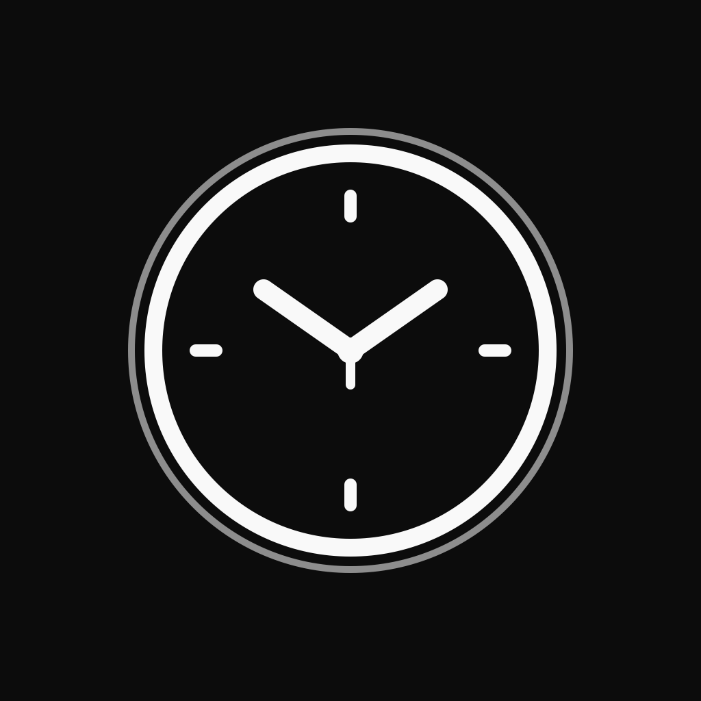
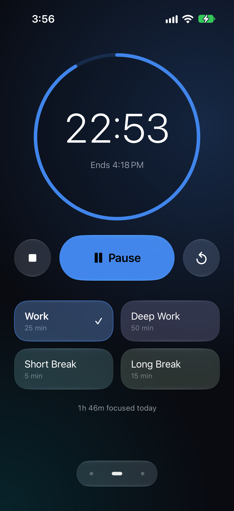
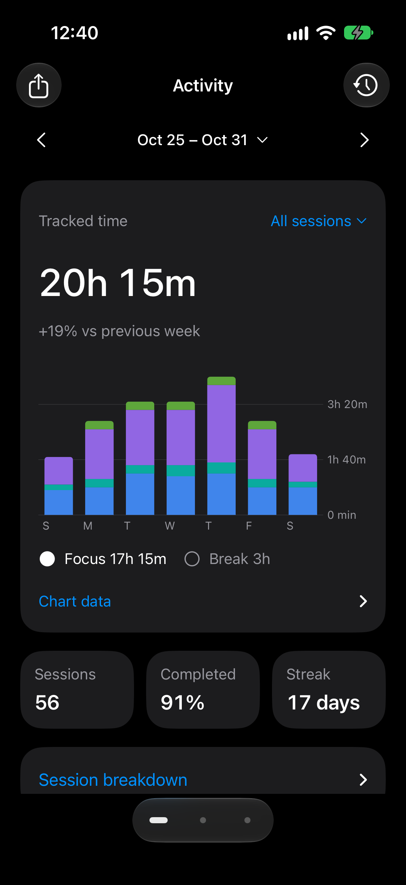
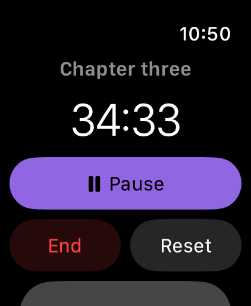
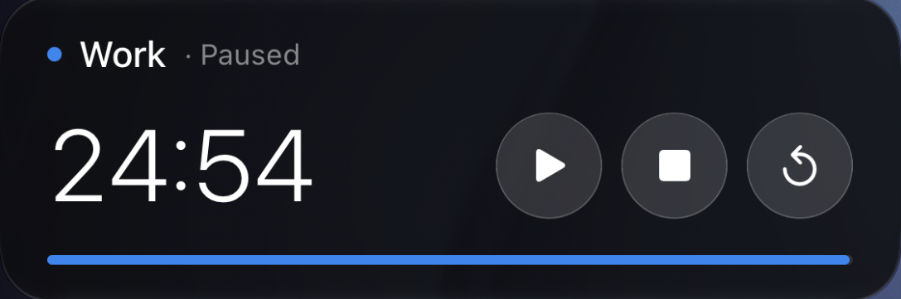

SimpleTimeriPhone + Apple Watch
A little more focus.

A clearer picture.

Within reach.
Control your iPhone timer from
your wrist or Lock Screen.


One timer. One history.
No account required.
No account required.